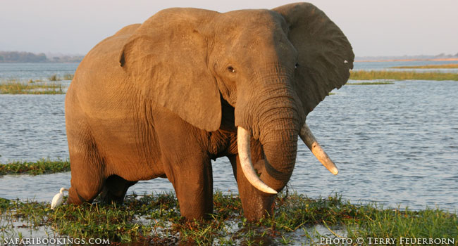

About Elephants
Elephants are mammals of the family Elephantidae and the largest existing land animals. Three species are currently recognised: the African bush elephant, the African forest elephant, and the Asian elephant. Elephantidae is the only surviving family of the order Proboscidea; extinct members include the mastodons. The family Elephantidae also contains several now-extinct groups, including the mammoths and straight-tusked elephants. African elephants have larger ears and concave backs, whereas Asian elephants have smaller ears, and convex or level backs. Distinctive features of all elephants include a long proboscis called a trunk, tusks, large ear flaps, massive legs, and tough but sensitive skin. The trunk is used for breathing, bringing food and water to the mouth, and grasping objects. Tusks, which are derived from the incisor teeth, serve both as weapons and as tools for moving objects and digging. The large ear flaps assist in maintaining a constant body temperature as well as in communication. The pillar-like legs carry their great weight.
Elephants are scattered throughout sub-Saharan Africa, South Asia, and Southeast Asia and are found in different habitats, including savannahs, forests, deserts, and marshes. They are herbivorous, and they stay near water when it is accessible. They are considered to be keystone species, due to their impact on their environments. Elephants have a fission–fusion society, in which multiple family groups come together to socialise. Females (cows) tend to live in family groups, which can consist of one female with her calves or several related females with offspring. The groups, which do not include bulls, are led by the (usually) oldest cow, known as the matriarch.

Males (bulls) leave their family groups when they reach puberty, and may live alone or with other males. Adult bulls mostly interact with family groups when looking for a mate. They enter a state of increased testosterone and aggression known as musth, which helps them gain dominance over other males as well as reproductive success. Calves are the centre of attention in their family groups and rely on their mothers for as long as three years. Elephants can live up to 70 years in the wild. They communicate by touch, sight, smell, and sound; elephants use infrasound, and seismic communication over long distances. Elephant intelligence has been compared with that of primates and cetaceans. They appear to have self-awareness, and appear to show empathy for dying and dead family members.

African elephants are listed as vulnerable and Asian elephants as endangered by the International Union for Conservation of Nature (IUCN). One of the biggest threats to elephant populations is the ivory trade, as the animals are poached for their ivory tusks. Other threats to wild elephants include habitat destruction and conflicts with local people. Elephants are used as working animals in Asia. In the past, they were used in war; today, they are often controversially put on display in zoos, or exploited for entertainment in circuses. Elephants are highly recognisable and have been featured in art, folklore, religion, literature, and popular culture.